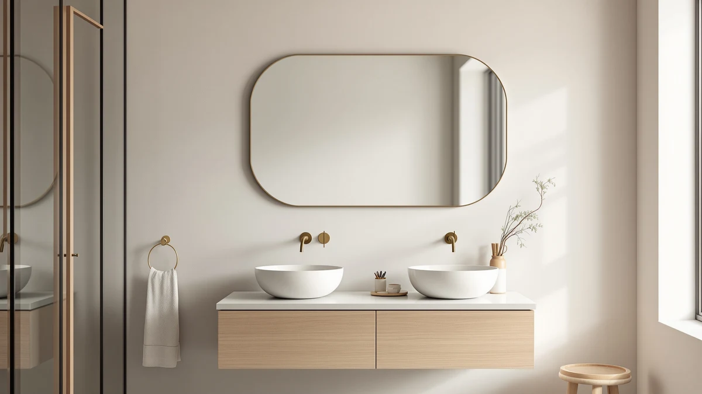

Quick Answer
The USHOWER 2-Pack Black Bathroom Mirrors pairs an aluminum frame with tempered glass and splits to about $65 per mirror at its $129.99 price, which holds up well against the single large mirrors we compared it to. It is the strongest fit for a double-sink bathroom that needs two matching mirrors rather than one oversized mirror.
Our pick: USHOWER 2-Pack Black Bathroom Mirrors, $129.99 Check Price on Amazon
Bottom line: our top pick is the USHOWER 2-Pack Black Bathroom Mirrors for Over Sink 24 x 36 at $129.99.
Things to Know Before You Buy
- All four mirrors we compared sit within two dollars of each other, from $129.97 to $129.99, so pack count and size matter more than price when picking between them.
- The USHOWER set uses an aluminum frame and tempered glass, the same basic build most framed bathroom mirrors in this range use.
- LED lighting and Bluetooth audio, available on the SBAGNO and FlyEcho mirrors, add convenience but also add more parts that can fail over time than a plain mirror.
- Arched mirrors, like the Autdot 2-Pack, fit a different wall layout than the rectangular USHOWER pair and won't align the same way above a standard double vanity.
- None of the four listings in this review had a public star rating or review count at the time of research, so this comparison relies on specs and pricing rather than a crowd score.
This ushower bathroom mirrors review looks at the USHOWER 2-Pack Black Bathroom Mirrors against three similarly priced alternatives to see which setup actually fits a typical bathroom wall. Double-sink bathrooms usually need two matching mirrors, and most mirror listings on Amazon are built around a single large piece, so the choice often comes down to pack count before it comes down to brand.
We compared the USHOWER set's specs, its current Amazon price and the available owner feedback against three competing mirrors from SBAGNO, FlyEcho and Autdot. The USHOWER 2-Pack is the clearer pick for anyone who specifically needs two matching mirrors, since the three alternatives here are single mirrors sized for one vanity rather than two.
Price alone will not help much here, since all four listings sit within two dollars of each other. The real differences show up in pack count, lighting, and shape, which is why this ushower bathroom mirrors review spends most of its time on those three factors instead of ranking the mirrors by price.
Why You Should Trust Us
Ilane Tall researches bathroom fixtures and home finishing products for Best Bathroom Mirrors, focusing on how listed specs, current pricing and verified owner feedback hold up against the marketing copy on a product page. This ushower bathroom mirrors review draws on the USHOWER 2-Pack's published specifications, its Amazon price history and the patterns visible in available owner reviews, since this site does not run a physical testing lab and makes no claim about mirrors in anyone's own bathroom. Each comparison point below ties back to a spec sheet, a listed price, or a review pattern that could be checked at the time of writing. Where a detail is not confirmed anywhere in the listing or in verified reviews, this review says so plainly rather than filling the gap with a guess.
Our Research Experience
Our research process for this ushower bathroom mirrors review centers on comparing manufacturer specifications, current Amazon pricing and patterns in verified owner reviews rather than a physical lab protocol. For the USHOWER 2-Pack, that meant checking the listed aluminum frame and tempered glass build against the materials and sizes used in the SBAGNO, FlyEcho and Autdot listings. Where verified reviews existed, we looked for recurring comments about fit, hardware quality and shipping condition, since a pattern across many buyers tends to be more reliable than one favorable post. We set aside listings that lacked a clear current price, a described material, or a valid Amazon product page. We also cross-checked each mirror's stated dimensions against its listed pack count, since a two-mirror set and a single large mirror cover distinct patterns of wall space even when their square footage of glass is similar.
Overview & Specs

USHOWER 2-Pack Black Bathroom Mirrors
What we like
- Tempered glass and an aluminum frame, per the listing, match the sturdier build found on pricier single mirrors
- Two 24 by 36 inch mirrors in one purchase cover a double-sink wall without buying twice
- At $129.99 for the pair, the per-mirror cost runs close to $65, in line with single mirrors of similar size in this review
Flaws but not dealbreakers
- No LED lighting or backlighting, unlike the SBAGNO and FlyEcho mirrors covered below
- No public star rating or review count was available at the time of research, which makes buyer sentiment harder to verify than for a longer-established listing
| Material | Tempered glass + aluminum |
| Size | 24"Lx36"W-2pcs |
This ushower bathroom mirrors review centers on the 2-Pack because it is the only two-mirror set among the four listings we looked at. The aluminum frame and tempered glass construction match what most mid-range framed mirrors use, and buying two mirrors in one $129.99 order works out close to $65 each, which lines up with the single mirrors from SBAGNO and FlyEcho once you account for their larger single-piece sizes.
The tradeoff is that the USHOWER set skips the LED lighting built into two of the three alternatives here, so anyone who wants backlit or dimmable light at the mirror needs to look at the SBAGNO or FlyEcho instead. There is also no published star rating or review count on this listing at the time of research, so the case for it rests on its build and its per-mirror price rather than a track record of buyer feedback.
Measuring the wall before ordering matters more with a two-mirror set than with a single piece, since the gap between the two 24 by 36 inch mirrors has to line up with the spacing between sink centers. Owners replacing an existing double-mirror setup should measure that center-to-center distance first, then compare it against the combined width of the USHOWER pair, rather than assuming any two-pack will fit the existing layout.
What We Liked
The clearest advantage in this ushower bathroom mirrors review is the pack count. Buying one $129.99 listing gets you two 24 by 36 inch mirrors, which covers a double-sink vanity without sourcing a second mirror separately or hoping a single large piece matches the wall layout.
The build itself, tempered glass set in an aluminum frame, is a sensible choice at this price. It is the same basic construction used across most mid-range framed mirrors, and it avoids the thinner edge seals sometimes found on budget frameless designs.
Buying one listing for two mirrors also simplifies returns and warranty tracking compared to ordering two separate single mirrors from different brands. A single order number and a single delivery window cut down on the coordination that two-mirror shoppers otherwise have to handle themselves.
What Could Be Better
The USHOWER 2-Pack has no lighting of its own. The SBAGNO and FlyEcho mirrors in this comparison both add LED backlighting, and the SBAGNO layers in Bluetooth audio and three selectable color temperatures on top of that, so anyone who wants light built into the mirror gets more from either of those two.
There is also no public star rating or review count attached to this listing as of this research. That does not mean the product performs poorly, only that there is less third-party feedback to weigh than on a mirror with an established review history. Shoppers who weigh crowd ratings heavily when comparing bathroom mirrors should check the current Amazon listing directly before buying, since review counts can change between when this piece was researched and when it is read.
Who Is It For?
The USHOWER 2-Pack fits best in a double-sink bathroom where the vanity layout calls for two separate mirrors rather than one wide piece. It also suits anyone who prefers a plain mirror without built-in lighting, either because the bathroom already has adequate vanity lighting or because fewer electronic parts means fewer things that can eventually fail. Buyers who specifically want LED light, Bluetooth audio or an arched shape should look at the SBAGNO, FlyEcho or Autdot alternatives covered next instead.
It is a weaker fit for a single-sink bathroom with one wide vanity mirror opening, where a single 30 by 48 inch mirror like the FlyEcho fills the space more cleanly than two smaller mirrors with a visible gap between them.
Alternatives to Consider
If the USHOWER 2-Pack does not match your bathroom layout, these three alternatives cover the gaps this ushower bathroom mirrors review found: built-in lighting, extra audio features, and a different mirror shape. Each one sits within a couple of dollars of the USHOWER price, so the choice comes down to features and layout rather than budget.

Also Great
SBAGNO 24x32 LED-Bathroom-Mirror-with-Bluetooth Dimmable-Lighted-Bathroom-Vanity-Mirror-with-3-Colors，Backlit +
Dimmable LED lighting, Bluetooth audio and three color temperatures, for anyone who wants more than a plain mirror.
$129.99
Check Price on Amazon
Also Great
30"x48" LED Bathroom Mirror with
A single 30 by 48 inch LED mirror for a wide vanity that only needs one large mirror rather than a pair.
$129.99
Check Price on Amazon
Best Value
Autdot 2-Pack Arched Mirror Wall
Two arched mirrors at $129.97, the closest match to the USHOWER's pack count with a softer, rounded shape.
$129.97
Check Price on AmazonFrequently Asked Questions
Is the USHOWER 2-Pack Black Bathroom Mirrors worth $129.99?
At $129.99 for two mirrors, the per-mirror cost lands near $65, which is competitive with the single large mirrors in this ushower bathroom mirrors review. It makes the most sense for a double-sink layout that needs two matching mirrors rather than one oversized one. For a single vanity, a buyer typically gets more usable mirror surface per dollar from one of the single large mirrors covered below instead.
How does the USHOWER set compare to LED mirrors like the SBAGNO or FlyEcho?
The USHOWER 2-Pack has no built-in lighting, while the SBAGNO and FlyEcho listings in this review add LED backlighting and, in the SBAGNO's case, Bluetooth audio. Owners who want ambient light at the mirror should lean toward one of those two, but anyone who needs a matching pair of plain mirrors gets more coverage per dollar from the USHOWER set.
Do any of the mirrors in this review have a published star rating?
No. None of the four listings we compared, including the USHOWER 2-Pack, carried a public star rating or review count at the time of research, so this review relies on specs, pricing and the manufacturer's own product descriptions rather than a crowd score. Check the current Amazon listing directly if a rating has since been added.
Final Verdict
This ushower bathroom mirrors review comes down to one question: do you need two matching mirrors or one larger single mirror? For the first case, the USHOWER 2-Pack is the most direct fit among the four mirrors covered here, pairing an aluminum frame and tempered glass with a price that splits to roughly $65 per mirror. Buyers who want built-in LED lighting, Bluetooth audio or an arched shape instead will get a better match from the SBAGNO, FlyEcho or Autdot alternatives, but for a straightforward double-sink setup, USHOWER's pair is the easier recommendation. Measure the sink spacing first, confirm the current price on the listing, and the USHOWER 2-Pack holds up as a sound, if unlit, choice among its closest competitors.